PUEBLO MÁGICO
NOMBRAMIENTO OFICIAL FEDERAL
NOMBRAMIENTO OFICIAL FEDERAL
DE LA HUMANIDAD POR LA UNESCO
DE TIERRA DENTRO
Fundado en el año 1110 por los Otomíes, Aculco ("Lugar donde tuerce el agua") es un rincón mexiquense lleno de misticismo, tradición y un legado ancestral que perdura en sus calles empedradas y en la calidez inigualable de su gente.
La revista Artes de México publicó su número doble 177 178 dedicado a los pueblos del Estado de México. Un testimonio visual invaluable de nuestra historia. Esta edición destacó a Aculco dentro de una propuesta de ruta histórica para mostrar la renovación de su imagen urbana y la mejora de servicios públicos.
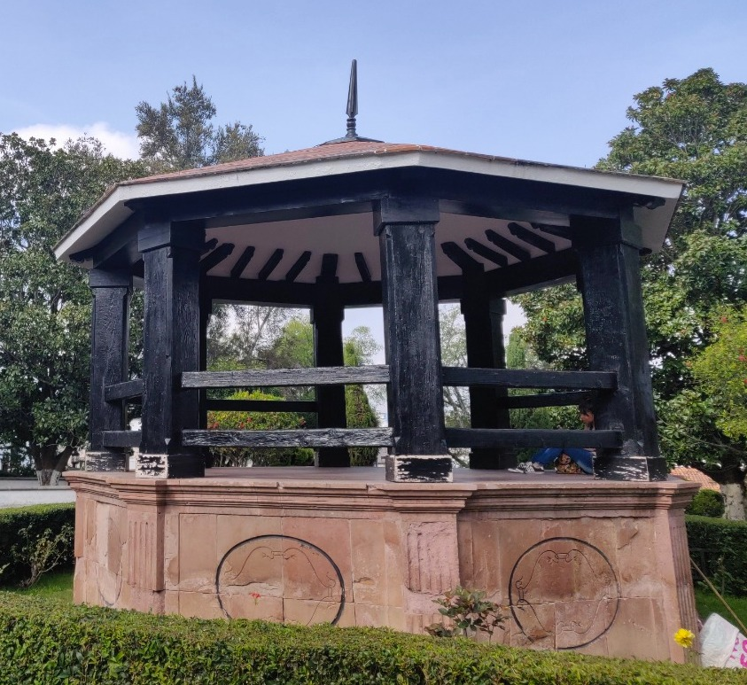
Punto de reunión dominical.
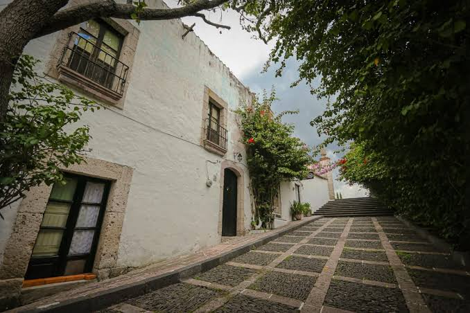
Caminatas llenas de historia.
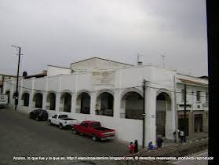
Arquitectura y comercio local.
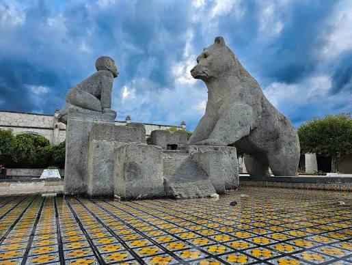
Monumento representativo y emblemático.
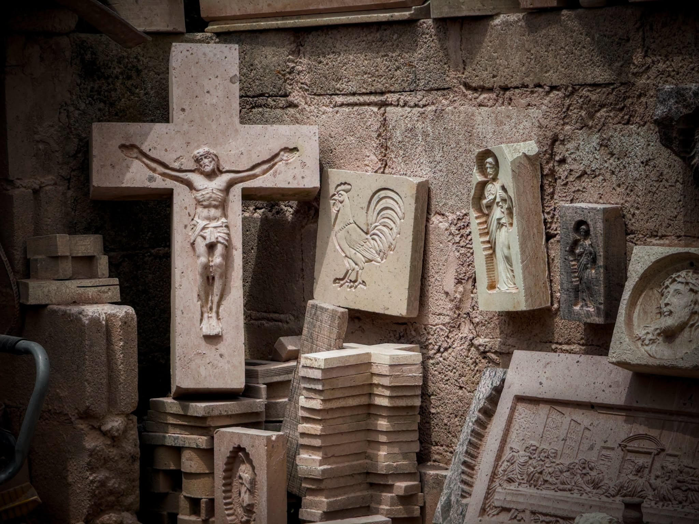
Obras maestras en piedra rosa.
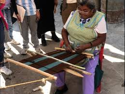
Telares de cintura tradicionales.
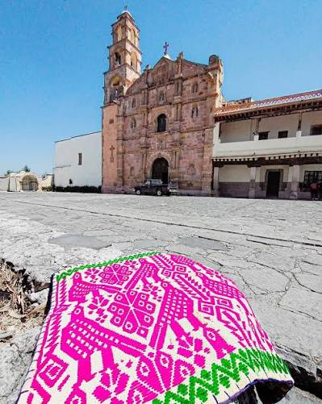
Iconografía de nuestra cosmovisión.

Patrimonio cultural de México.

Rodeada de prismas basálticos.
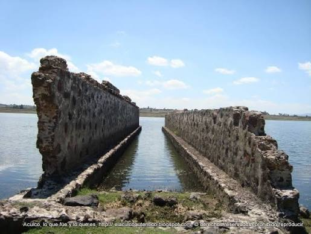
Cuerpo de agua emblemático.
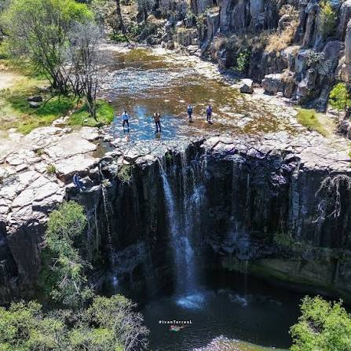
Paisaje natural impresionante.

Desafío para el alpinismo.
Obras que narran el desarrollo de nuestra comunidad.
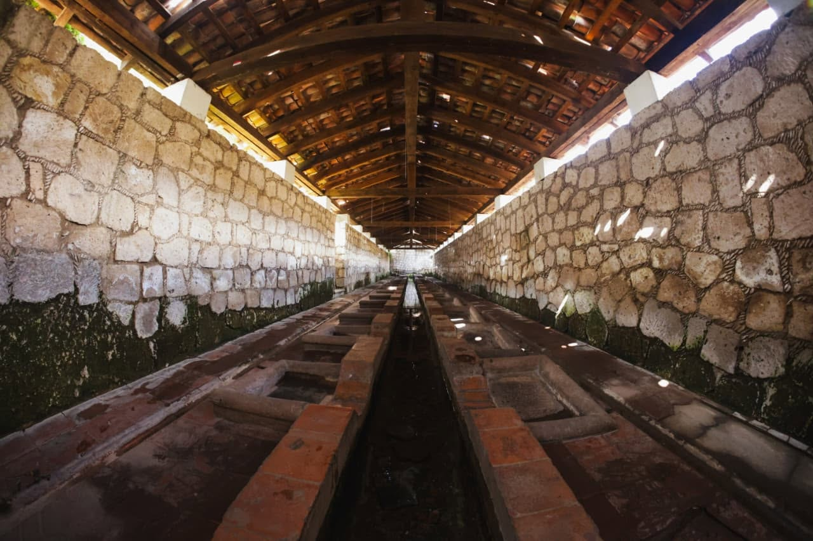
Testigos de leyendas vivas.
Antiguo instrumento de cantera.
Nuestros santuarios históricos cobran vida a través de las vibrantes fiestas patronales que nos dan identidad.
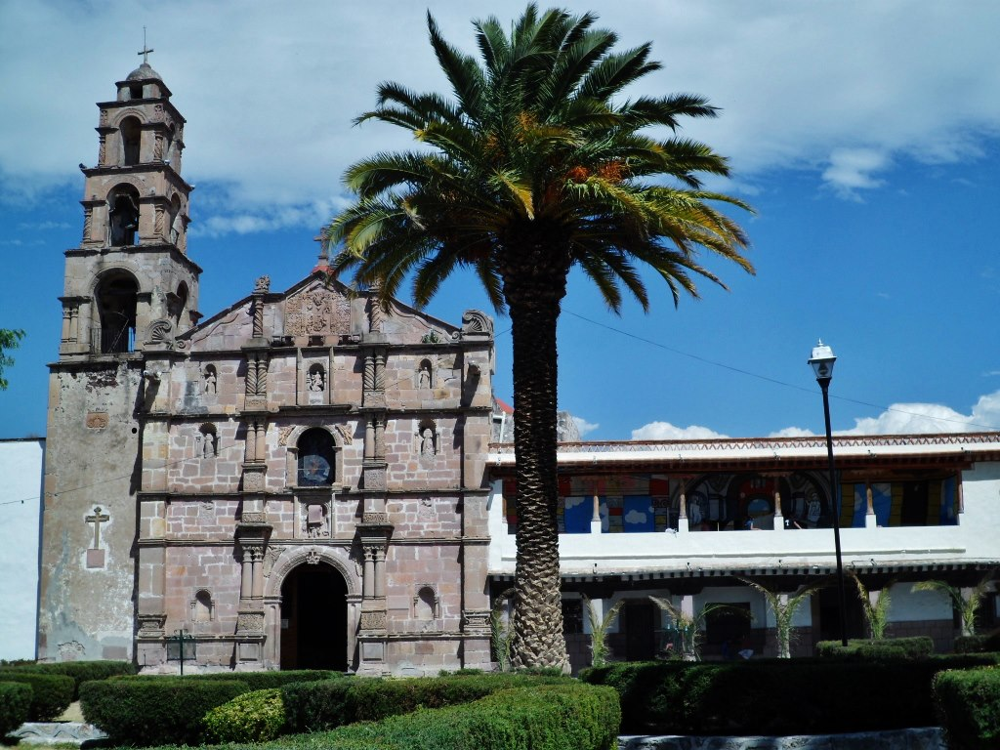
Joya del siglo XVI, sede de nuestro festejo mayor.

Recinto que protege nuestras aguas y devoción.
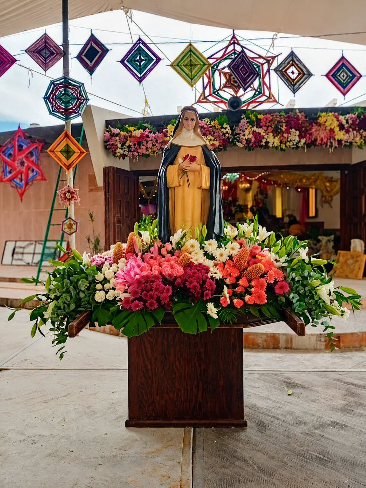
Tradición viva llena de fe, música y color.
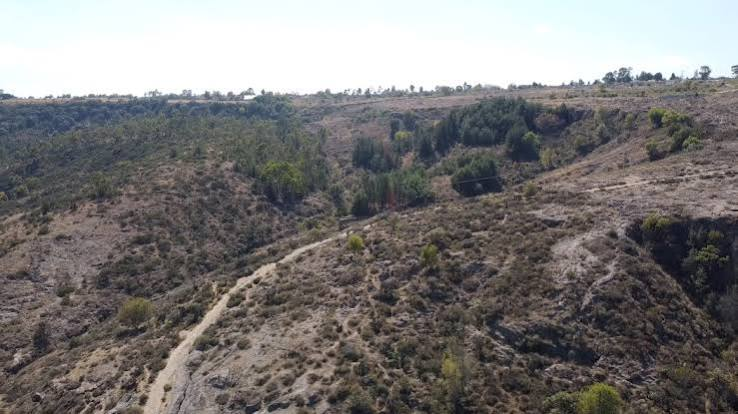
Descanso de antiguos viajeros.
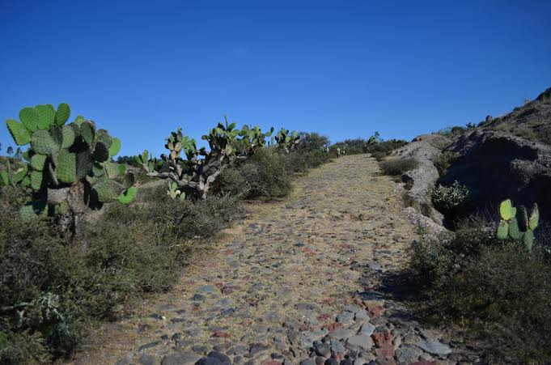
Infraestructura del siglo XVIII.
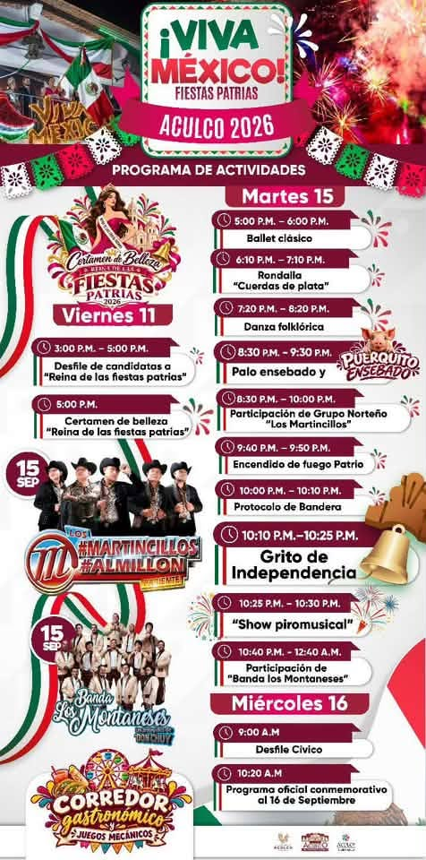
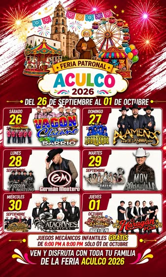
Toca cualquiera de los marcadores para descubrir tesoros ocultos de Aculco y saber cómo llegar.